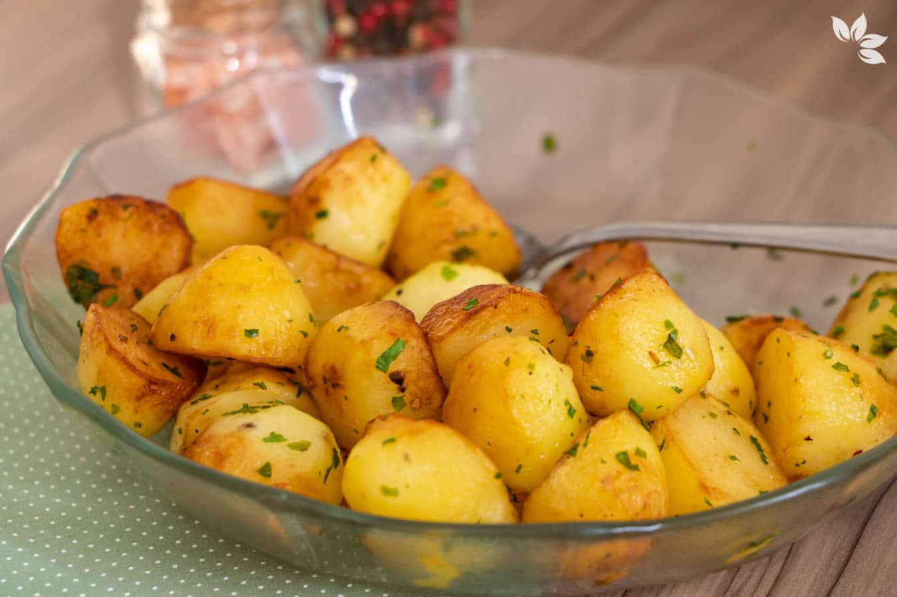
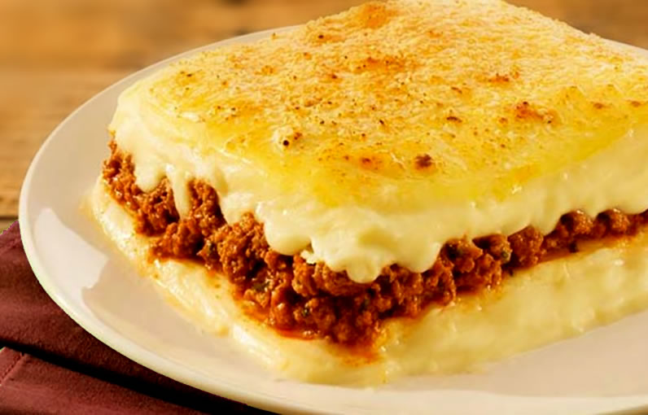

3 batatas médias
Azeite
Sal
Páprica doce ou defumada
MODO DE PREPARO:
Lave bem as batatas e corte-as em gomos. Não precisa tirar a casca. Cozinhe em água fervendo por apenas 5 minutos para dar uma amolecida. Escorra, seque bem e coloque em uma assadeira. Regue com bastante azeite, sal, páprica e o alecrim. Leve ao forno alto (200°C) por uns 20-30 minutos ou na Airfryer por 15-20 minutos, sacudindo na metade do tempo até dourar. Depois é só servir!
BATATA SALTÉ

INGREDIENTES:
-
3 batatas
-
1 colher de sopa de manteiga
-
Azeite
-
Salsinha picada
-
1 Kg de batata
-
2 Colheres de sopa de manteiga
-
1/2 Copo de leite
-
Sal
- 500g de Carne moída ou frango
- 1 Cebola picada
- 1 Dente de alho
- 200g de Queijo muçarela ralado ou fatiado
- Temperos a gosto
-
PESQUISA SOBRE A ORIGEM DA BATATA (TEXTO ADAPTADO):
https://www.embrapa.br/hortalicas/batata/origem-e-botanica -
PESQUISA SOBRE AS ESPÉCIES DE BATATA CITADAS (TEXTO ADAPTADO):
https://www.deliway.com.br/blog/tipos-de-batata -
PESQUISA SOBRE A TABELA NUTRICIONAL INFORMADA (ADAPTAÇÃO):
https://boomi.com.br/a-batata-doce-e-mais-saudavel -do-que-a-batata-inglesa/?srsltid=AfmBOootWHZ-2bznqsyhXgrpRNKU5kzBrYeDv364y6LdZkS5CHQvKJ8O -
PESQUISA SOBRE A RECEITA DE ESCONDIDINHO DE CARNE :
https://www.tudogostoso.com.br/receita/136814-escondidinho-de-carne-moida.html -
VÍDEO SOBRE O DESENVOLVIMENTO DA BATATA:
https://youtu.be/tqco9Knolgo?si=sEdDUTcwojPcTODk -
IMAGEM (SEM LINK):
Canva
MODO DE PREPARO:
Descasque as batatas e corte em cubos médios. Cozinhe em água com sal até ficarem macias, mas sem desmanchar. Escorra. Em uma frigideira grande, derreta a manteiga com o fio de azeite (o óleo evita que a manteiga queime). Coloque as batatas e deixe em fogo médio, mexendo de vez em quando até todos os lados ficarem dourados. Finalize com a salsinha.
ESCONDIDINHO DE BATATA

INGREDIENTES:
MODO DE PREPARO:
Descasque as batatas e cozinhe em água com sal até ficarem bem macias. Escorra a água e amasse-as ainda quentes. Em uma panela, misture a batata amassada com a manteiga e o leite, mexendo em fogo baixo até virar um purê lisinho. Reserve. Em outra panela, refogue a cebola e o alho com um fio de azeite. Adicione a carne ou o frango e deixe fritar bem. Acrescente um pouco de molho de tomate (não deixe ficar muito líquido, precisamos um recheio firme) e tempere como preferir. Em um refratário que possa ir ao forno, espalhe uma camada fina de purê no fundo. Coloque todo o recheio por cima. Cubra com o restante do purê, espalhando bem com uma colher.Cubra tudo com o queijo muçarela e leve ao forno (200°C) por cerca de 15 a 20 minutos, apenas para o queijo derreter e gratinar para deixar ainda mais bonito.
BIBLIOGRAFIA
FONTES DE PESQUISA
ARQUIVOS DE MÍDIA